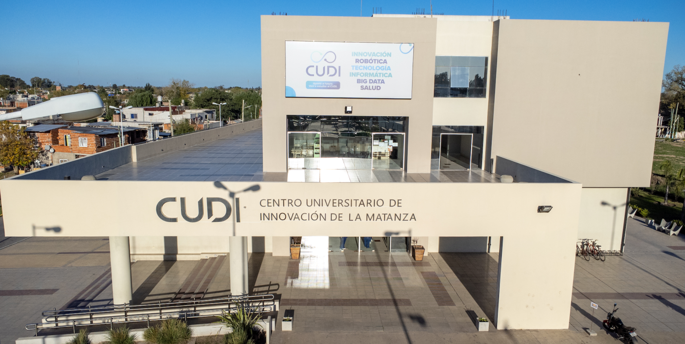

Centro universitario de innovacion de la Matanza
Inaugurado en 2019, está ubicado en González Catán y forma parte de la Universidad Nacional de La Matanza. Su objetivo es acercar la educación superior y la tecnología a la comunidad del sudoeste bonaerense.
Carreras:
El CUDI ofrece propuestas académicas orientadas a la innovación, la tecnología y el desarrollo regional, con foco en la formación práctica y la vinculación con el sector productivo.
Industria y Tecnología:
- Tecnicatura Universitaria en Biotecnología
- Tecnicatura Universitaria en Diseño Industrial
- Tecnicatura Universitaria en Tecnología de los Alimentos
Informática y Tecnología:
Vida y Tecnología:
Diplomaturas:
- Diplomatura en Desarrollo Web
- Diplomatura en Diseño e Impresión 3D
- Diplomatura en Inteligencia Artificial
Modalidades Disponibles y Datos de Contacto
Modalidades de Estudio:
- Presencial, con algunas opciones híbridas en cursos específicos
Contacto:
- Página web: www.cudi.ar
- Dirección: Av. Juan Manuel de Rosas 10.048, González Catán, Buenos Aires
- Teléfono: (011) 4484-7100 (interno 8900)